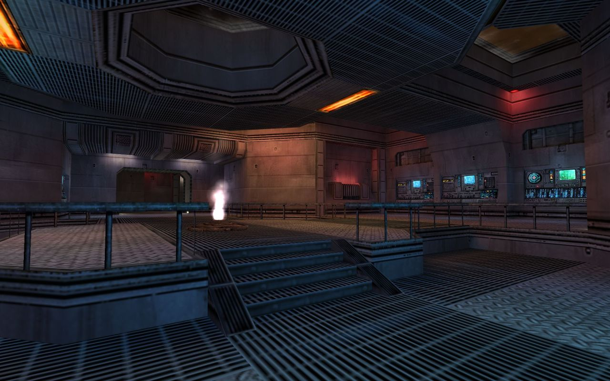

ns_veil for Natural Selection by Andrew Weldon
Mr. GoldSourceGold, how long do you think that section took to make from scratch?
An experienced mapper familiar with the textures could probably put this together in an hour, assuming a good vision of what the room will look like in the end. The lighting is great in Veil, allow a few hours more for tweaking the lighting in this shot.
Real answer: ask @mutton-basher :)
Funny thing is, for Veil I was so familiar with the texture lights I’d used for Eclipse, I didn’t actually need much time to iterate on lighting.
By itself, if I knew exactly what the room was going to be, yeah, it’s probably an hour-ish. But I recall this room taking a handful of revisions to get right. At one point it was a symmetric layout, but then as I broke up the symmetry the rooms on each side started to change and take on their personality. Some pushing and pulling of routes, that sort of thing, swapping out textures and trims, and I think the ceiling shapes took me a while to refine as well.
I should dig back through my old screenshot archive and see how well I could document the Veil dev process like I did Eclipse a couple years back…
Re: Veil - Yes, yes you should. :)